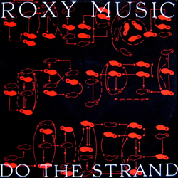
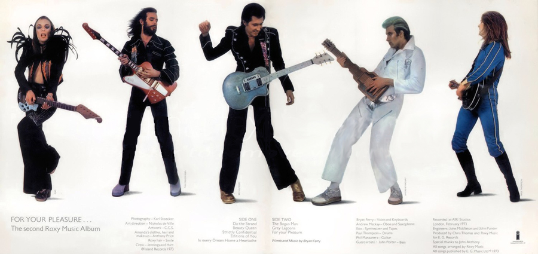

DO THE STRAND |
||||
 |
There's a new sensation A fabulous creation A danceable solution To teenage revolution Do the Strand, love When you feel love It's the new way That's why we say Do the Strand Do it on the tables Quaglino's place or Mabel's Slow and gentle Sentimental All styles served here Louis Seize he prefer Laissez-faire Le Strand Tired of the tango Fed up with fandango Dance on moonbeams Slide on rainbows In furs or blue jeans You know what I mean Do the Strand Had your fill of Quadrilles The Madison and cheap thrills Bored with the Beguine The samba isn't your scene They're playing our tune By the pale moon We're incognito Down the Lido And we like the Strand Arabs at oasis Eskimos and Chinese If you feel blue Look through Who's Who See La Goulue And Nijinsky Do the Strandsky Weary of the Waltz And mashed potato schmaltz Rhododendron Is a nice flower Evergreen It lasts forever But it can't beat Strand power The Sphinx and Mona Lisa Lolita and Guernica Did the Strand | |||
STRICTLY CONFIDENTIAL |
||||
| Before I die I'll write this letter Here are the secrets you must know Until the cloak of evening shadow Changes to mantle of the dawn Will it be sunny then I wonder' Rolling and turning How can I sleep' Hold on till morning What if I fall' Over the hills and down the valleys Soaring aloft and far below Lying on stony ground the fragments Truth is the seed we tried to sow Marking the time spent on our journey There isn't much we have to show Counting the cost in money only Strikes me as funny don't you know' Tongue tied the thread of conversation Weighing the words one tries to use Nevertheless communication This is the gift you must not lose Hauling me always are the voices Tell us are you ready now' Sometimes I wonder if they're real We're ready to receive you now Or is it my own imagination? Have you any more to say? Guilt is a wound that's hard to heal It's a cross you have to bear Could it be evil thoughts become me Tell us what you're thinking now Some things are better left unsaid Magical moment The spell it is breaking There is no light here Is there no key | ||||
BEAUTY QUEEN |
||||
| Valerie please believe It never could work out The time to make plans Has passed, faded away Oooh the way you look Makes my starry eyes shiver Then I look away Too much for one day One thing we share Is an ideal of beauty Treasure so rare That even devils might care Your swimming-pool eyes In sea breezes they flutter The coconut tears Heavy-lidded they shed Swaying palms at your feet You're the pride of your street While you worship the sun Summer lover of fun Gold number with neighbours Who said that you'll go far Maybe someday be a star A fast mover like you And your dreams will all come true All of my hope, and my inspiration I drew from you Our life's pattern's drawn in sand But the winds could not erase The memory of your face Deep in the night Plying very strange cargo Our soul-ships pass by Solo trips to the stars - in the sky Gliding so far That the eye cannot follow Where do they go We'll never know | ||||
EDITIONS OF YOU |
||||
| Well I'm here looking through an old picture frame Just waiting for the perfect view I hope something special will step in to my life Another fine edition of you A pin-up done in shades of blue Sometimes you find a yearning for the quiet life The country air and all its joys But badgers couldn't compensate at twice the price For just another night with the boys oh yeah And boys will be boys, will be boys They say love's a gamble, hard to win, easy lose And while sun shines you'd better make hay So if life is your table and fate is the wheel Then let the chips fall where they may In modern times the modern way And as I was drifting past the Lorelei I heard those slinky sirens wail - whooo So look out sailor when you hear them croon You'll never been the same again, oh no Their crazy music drives you insane - this way So love, leave me, do what you will - Who knows what tomorrow might bring Learn from your mistakes is my only advice And stay cool is still the main rule Don't play yourself for a fool Too much cheesecake too soon Old money's better than new No mention in the latest Tribune And don't let this happen to you | ||||
IN EVERY DREAM HOME A HEARTACHE |
||||
| In every dream home a heartache And every step I take Takes me further from heaven Is there a heaven? I'd like to think so Standards of living They're rising daily But home oh sweet home It's only a saying From bell push to faucet In smart town apartment The cottage is pretty The main house a palace Penthouse perfection But what goes on What to do there Better pray there Open-plan living Bungalow ranch-style All of its comforts Seem so essential I bought you mail-order My plain-wrapper baby Your skin is like vinyl The perfect companion You float in my new pool Deluxe and delightful Inflatable doll My role is to serve you Disposable darling Can't throw you away now Immortal and life size My breath is inside you I'll dress you up daily And keep you till death sighs Inflatable doll Lover ungrateful I blew up your body But you blew my mind Oh those Heartaches Dream home Heartaches | ||||
THE BOGUS MAN |
||||
| The Bogus Man is on his way As fast as he can run He's tired but he'll get to you And shoot you with his gun Focussed his mind On something he cared about But it came out a shout Just like before The Bogus Man is at your heels Now clutching at your coat You must be quick now hurry up He's scratching at your throat Concealed his doubt By skilful evasion But he couldn't find out About deception The Bogus Man is on his way As fast as he can run He's tired but he'll get to you And show you lots of fun | ||||
GREY LAGOONS |
||||
Blue suns and grey lagoons Silver starfish with honeymoons All these and more to choose If you Satin teardrops on velvet lights Morning sickness on Friday nights Heaven knows what others I might bring To you Broken partings making strange goodbyes Hopeless cases with fake alibis Even hoping we'll be there to share With you Blue suns and grey lagoons Grey lagoons Grey lagoons |
||||
FOR YOUR PLEASURE |
||||
| For your pleasure In our present state Part false part true Like anything We present ourselves The words we use tumble All over your shoulder Gravel hard and loose There all night lying With your dark horse hiding Abhorring such extremes You're rubbing shoulders With the stars at night Shining so bright Getting older But you'll wake up soon And fight In the morning Things you worried about Last night Will seem lighter I hope things Will turn out right Old man Through every step a change You watch me walk away Tara tara... | ||||
PYJAMARAMA |
||||
| Couldn't sleep a wink last night Oh how I'd love to hold you tight They say you have a secret life Made sacrifice your key to paradise Never mind, take the world by storm Just boogaloo a rhapsody divine Take a sweet girl just like you How nice if only we could bill and coo I may seem a fool to you for everything I say or think or do How could I apologise for all those lies The world may keeps us far apart But up in heaven, angel You can have my heart Diamonds may be your best friend But like laughter after tears I'll follow you to the end | ||||
 |
||||